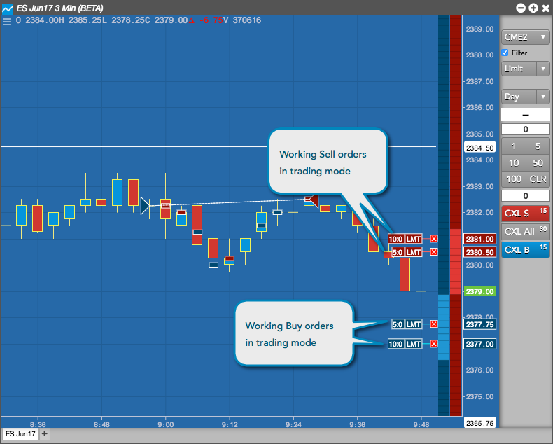
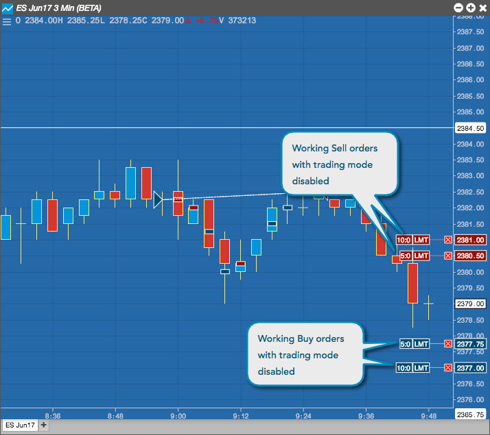
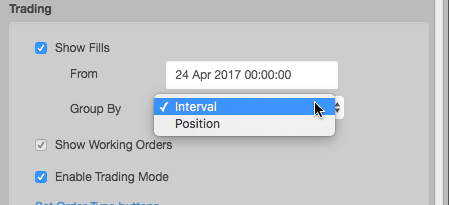
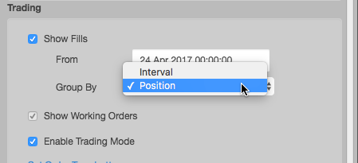

In a chart, you can display fills and working orders, as well as track your fills by time interval or by position.
To display working orders:
Open the right-click Settings: Chart menu and check the Enable Trading checkbox.
The Show Working Orders checkbox is checked by default and grayed out when you enable trading mode in the chart.
The chart displays working orders.

Optionally, you can disable trading mode and check the Show Working Orders checkbox to display working orders.

To display fills:
To group fills by interval, click Group By and select Interval.

To group fills by position, click Group By and select Positions.

The chart displays fills grouped by interval or position based on your selection.